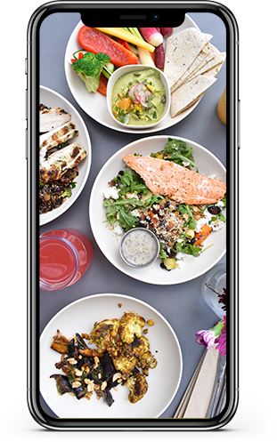

Je kunt ook mijn aap downloaden
Tim's Thaise Toko in de appstore of die andere concurrent.
Je kunt kiezen uit thaise-macarroni, dat zijn eigenlijk noodles voor de foodies onder ons. Gehakbal met jus, voor de mensen die niets anders durven te proberen. Spinazie met gehakt, zie hierboven. Thais-Nederlands fusion, voor de iets meer gewaagden onder ons. Denk hieraan bijvoorbeeld, brocolie met varkensoren. En als laatste onze specialiteit, noodles met kipsate. 3 stuks.


